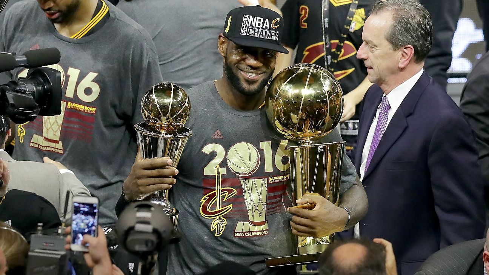

Lebron James Is My Hero

From his stellar on-court leadership and dominance as a 16-time All Star, to making the I Promise School--where he is helping at-risk children graduate and go to college--Lebron James exemplifies exactly what it means to shine in the spotlight and make the world better each day.
I have been a Lebron fan ever since I first started playing basketball as a young kid, and I have tried to emulate his playing style on the court throughout my basketball career. My favorite part of his game is his ability to get to the basket no matter who is in the way. He drives really strong and that motivates me to have a similar mentality when trying to score.
Fun Facts About Lebron
- He is married to his high school sweathert
- He is the youngest player in the NBA to reach 30,000 career points
- His nickname is "King James"
- He was the youngest player to be drafted by the NBA number 1 at the age of 18.
During my senior year of college, I was fortunate enough to travel all the way to Los Angeles for a weekend in the fall to see him play for the Lakers. He somehow knew I travelled all the way to see him and dunked three times all for me!
With the 2020 playoffs currently happening now, I have been cheering him and the Lakers on as he goes for his fourth NBA title!
